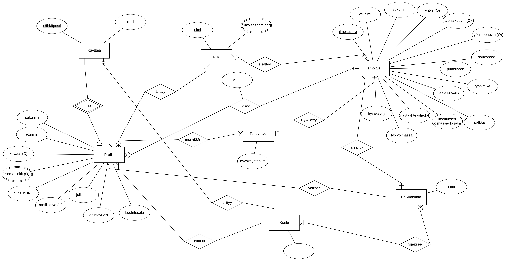

Ticorporate portfolio
Kalle Kaitamäki
Päärooliini projektissa oli Backend-kehittäjä
Sivuroolini oli testaaja
Myös muihin rooleihin liittyviä tehtäviä tuli projektin aikana tehtyä
Projektin alussa jokainen määrittely oppimistavoitteet itselleen. Halusin kehittää backend-ohjelmointi taitojani ja opetella käyttämään siihen tarvittavia frameworkeja paremmin. Halusin myös oppia lisää tietoturvasta ja siitä miten backend-sovellus voidaan hostata eri ympäristöissä.
Tavoitteeni oli myös oppia suunnittelemaan parempia relaatiotietokantoja ja kirjoittamaan niihin monimutkaisempia kyselyitä
Frontend puolelta tavoitteenani oli kehittyä frontendin ja backendin yhdistämisessä toisiinsa.
Viimeisenä halusin kehittää ryhmätyöskentely taitojani ja oppia scrum porsessin osana olemisesta.
Suunnittelu
Projektin alkuvaiheessa pidimme kahden viikon mittaisen design sprintin.
Suunnittelmien tekeminen jatkui kuitenkin myös tämän jälkeen.
Tietokannaksi valittiin sql tietokanta
Tallennettavien käsitteiden välillä tulisi olemaan paljon suhteita joten relaatiokanta sopi nosql kantaa paremmin sovelluksemme tietokannaksi.
Tietokannasta tehtiin ensin design sprintin/1. sprintin aikana erd-malli.
Design sprintin aikana päätettiin käyttää aws:n palveluita sovelluksemme hostauksessa.
Aws:n luotu arkkitehtuuri
Backendiksi valittiin perinteinen rest arkkitehtuuria hyödyntävä api jolla tietokantaa sekä aws:n palveluita hallitaan.
Backendin perusrunkona toimii express.js kirjasto.
Normaalista poiketen valitsin typescriptin backendin rakentamiseen tavallisen javascriptin sijaan koska halusin oppia lisää tyypitetystä kielestä. Typescript myös vähentää yleisesti kehitysaikaisten virheiden määrää.
Tietokanta
Sovelluksemme tietokannaksi valittiin MariaDB. MariaDB valittiin MySQL:n sijasta koska sen suorituskyky on parempi ja koska MariaDB ei vaadi maksettua lisenssiä kaikkien ominaisuuksien käyttöön.
Erd-mallin valmistuttua tehtiin sen perusteella er-malli mysqlworkbench työkalun avulla

Kuten voidaan huomata er-malliin tehtiin lopulta pieniä muutoksia kehitystyön edetessä poiketen erd-mallista.
Kehitystyön aikana opin paljon uutta sql:stä ja tietokannan suunnittelusta. Huomasin myös miten tärkeää eri roolien kommunikointi keskenään on tietokannan suunnittelun kannalta. Tietokantaa joudutiinkin muuttamaan monesti esimerkiksi UI suunnitelmien muuttuessa.
sql
Sql kielestä opin myös paljon uusia asioita. Yksi näistä oli tietokannan eventit, eli tapahtumat joita ajetaan tiettyjen ehtojen (tässä tapauksessa kellonajan) perusteella. Eventit olivat tarpeellisia projektissa koska vanhentuneet toimeksiantoilmoitukset pitää piilottaa näkyvistä automaattisesti. Tätä varten loin eventin joka ajetaan joka päivä heti keskiyön jälkeen.

Asia mistä opin paljon lisää olivat proceduurit. Proceduurit olivat järkevä tapa toteuttaa tiettyjä toimenpiteitä kuten profiilin poistaminen koska siihen oli helppo lisätä transaktio. Proceduurin tekeminen selkeytti ja lyhensi myös backend koodia.

Ja proceduurin käyttö backend koodissa profiili kontrollerissa.
// Deletes profile by id
async deleteProfile(
_request: express.Request,
response: express.Response,
next: express.NextFunction,
) {
try {
// Calls database procedure which deletes all profile data with given profile id.
// Procedure wrappes delete queries in transaction and rollbacks if anything fails.
const result = await queryDb('CALL deleteProfile(?);', [
_request.params.profileid,
]);
console.log(result);
response.status(200).json({
message: 'Deleted profile succesfully',
success: true,
});
} catch (error: unknown) {
next(error);
}
}
Backend
Sovelluksen bakcendiksi muodostui rest rajapinta joka on toteutettu Express.js frameworkin avulla.
Backendin arkkitehtuuri koostuu pääasiassa kontrollolereista ja routeista
const schoolC = {
// Function for finding school by name
async findByName(
_request: express.Request,
response: express.Response,
next: express.NextFunction,
) {
try {
const data = await queryDb('SELECT * FROM School WHERE name = ?;', [
_request.params.name,
]);
console.log(data);
response.status(200).json(data);
} catch (error: unknown) {
next(error);
}
},
// Function for finding all schools
async findAll(
_request: express.Request,
response: express.Response,
next: express.NextFunction,
) {
try {
const data = await queryDb('SELECT * FROM School;', []);
console.log(data);
response.status(200).json(data);
} catch (error: unknown) {
next(error);
}
},
};
const schoolRouter = express.Router();
// Route to get school by name
// /schools/:name
schoolRouter.get('/:name', schoolC.findByName);
// Route to get all schools
// /schools/
schoolRouter.get('/', schoolC.findAll);
Koska pyrin tekemään koodista mahdollisimman modulaarista, uudelleen käytettävää ja selkeää kirjoitin useita funktiota. Esimerkkinä funktio joka muuttaa pyynnön bodyssä tulevan päivitys datan sql lauseeksi ja mysql kirjaston vaatimiksi parametreiksi taulukkoon jotka korvaavat ? merkit sql lauseessa. Funktio on hyödyllinen esimerkiksi update lauseiden yhteydessä kun objektissa tuleva data pitää muuttaa sql muotoon.
const convertBodyToQueryFormat = (
request: express.Request,
tablename: string,
idcolumnname: string,
) => {
if (!request.body) {
throw new Error('No body received in request');
}
// Take values values from object to array
const values: unknown[] = Object.values(request.body);
// Take keys(columns) from object to array
const keys = Object.keys(request.body);
// Updatestring will contain update query
// It is contructed from values and keys separated from object
// This allows to use this route to update any number of columns in table row
// Start string of the query
let sql = 'UPDATE ' + tablename + ' SET ';
// Add each of keys(column names) one by one into updatestring
for (const x of keys) {
sql += String(x) + ' = ?';
// If added last key then insert just ' ' otherwise ',' is needed
sql += keys.indexOf(x) === keys.length - 1 ? ' ' : ', ';
}
// Last part of update string where you specify profile id
sql += 'WHERE ' + idcolumnname + ' = ?;';
return {
sql: sql,
sqlparams: values,
};
};
typescript
AWS
Projektin alussa päätettiin että palvelumme infrastruktuuri rakennetaan aws pilvipalvelujen päälle. Aws:n palvelut olivat minulle oikeastaan pelkästään pintaraapaisulta entuudestaan tuttuja joten infrastruktuurin rakentamiseen ja palveluiden käyttämiseen liittyi paljon uuden opettelua.
palvelut ja arkkitehtuuri
Lopullinen arkkitehtuuri muodostui vasta projektin loppuvaiheilla. Mallia yksinkertaistettiin huomattavasti ja esimerkiksi backendin ajamiseen valittiin ec2 sijasta elastic beanstalk sen helppokäyttöisyyden takia. Alla kuva arkkitehtuurista.

rds
cognito
Sovelluksen käyttäjätilien hallintaan valittiin aws:n palvelu cognito. Valmis palvelu oli järkevää valita sen sijasta että käyttäjätilejä tallennettaisiin itse tietokantaa koska valmis palvelu on tietoturvallisempi ja esimerkiksi salasanojen encryptauksesta ei tarvitse itse huolehtia.
Cognito palvelu pystytettiin aws:n konsolissa ja sille luotiin iam käyttäjä jonka kautta palvelua voidaan käyttää koodissa.
Alla on luokka joka sisältää sovelluksessamme tarvittavat metodit käyttäjien hallintaan.
koodia tähän
s3
Sovellus käyttää kahta S3 buckettia. Sovelluksen frontend tarjoillaan toisesta bucketista ja toinen bucketti on profiilikuvien tallennusta varten.
// Create new instance of s3
const s3 = new S3({
region: process.env.REGION,
accessKeyId: process.env.AWS_BUCKET_ACCESS_KEY,
secretAccessKey: process.env.AWS_BUCKET_SECRET_ACCESS_KEY,
});
const imageHelper = {
/**
* Function that uploads image ot s3 bucket
* @param {Express.Multer.File} file file that multer has saved
* @return {S3.ManagedUpload.SendData} object which contains information of saved image
*/
async uploadImg(file: Express.Multer.File) {
// Create filestream to read saved file
const fileStream = fs.createReadStream(file.path);
// Use upload method to upload filer to s3
// code try catch structure here
const result = await s3
.upload({
Bucket: process.env.AWS_BUCKET ?? '',
Body: fileStream,
Key: file.filename ?? '',
})
.promise();
// Delete image from servers local folder after upload
fs.unlink(process.cwd() + '/src/images/' + file.filename, (error) => {
if (error) {
console.error(error);
throw new Error('Error when deleting image');
}
});
return result;
},
/**
* Function that downloads image from s3 bucket
* @param {string} key S3 objects key that stores image
* @return {PromiseResult <S3.GetObjectOutput, AWSError>} image
*/
async getImg(key: string) {
try {
// Define download parameters
const downloadParams = {
Key: key,
Bucket: process.env.AWS_BUCKET || '',
};
// Check that object with specified key exists
// Throws error if it does not
await s3.headObject(downloadParams).promise();
// Use getObject method to feth image and return it as promise
const data = await s3.getObject(downloadParams).promise();
if (typeof data.Body !== 'undefined') {
return data.Body;
} else {
throw new Error('No image found');
}
} catch (error: unknown) {
return null;
}
},
};
export default imageHelper;
ses
elastic beanstalk
frontend
Pääsin myös toteuttamaan jonkin verran frontend kehitystä projektin aikana.
Olin tarpeen mukaan frontend-kehittäjien tukena kun backendin toiminnallisuuksia yhdistettiin frontendiin.
Projektin loppuvaiheessa pääsin myös tekemään sovellukseemme etusivun ja ohjesivut angular frameworkilla.
Korjasin myös satunnaisia bugeja joita ilmennyt esimerkiksi käyttäjätestauksen myötä.
Frontend kehityksessä minulla on vielä selkeästi kehittymisen varaa koskaolen opinnoissani suuntaunut pääasiassa backend puolelle.
testaus
Kuten aiemmin mainittiin, sivuroolini oli testaaja. Projektin alussa kirjoitettiin testaussuunnitelma joka sisälsi muunmuassa eri testaustyypit ja ohjeet dokumentaatioon.
Tehtävänäni oli pääasiassa backend-sovelluksen testaus. Testausta toteutin lähinnä tekemällä yksikkötestejä. Yksikkötestit toteutettiin mocha & chai sekä supertest kirjastojen avulla.
Tein myös zenhubiin bugit osion joka toimi projektin bug trackerinä. Ohjeet bugien ilmoittamiseen laadittiin testaussuunnitelmaan.
Projektin alussa tiesin lähinnä testauksen käsitteistöä ja osasin kirjoittaa hyvin yksinkertaisia testejä mocha & chai kirjastoilla. Vaikka testaus projektissa jäi lopuksi vähemmälle kuin olisin toivonut, oli se silti opettavainen kokemus ja varsinkin minulle uusi supertest kirjasto osoittautui hyödylliseksi.
Testausta olisi ehdottomasti pitänyt toteuttaa enemmän projektin aikana ja se onkin yksi asioista minkä tekisin toisin jos saisin aloittaa projektin alusta.
it('Insert profile', (done) => {
request(app)
.post('/profiles')
.set('Authorization', token)
.send({
email: 'testaus@gmail.com',
})
.set('Accept', 'application/json')
.expect('Content-Type', /json/)
.expect(201)
.end((err, res) => {
if (err) {
return done;
}
expect(JSON.parse(res.text).success).to.be.true;
return done();
});
});
it('Update profile', async () => {
const id = await request(app)
.get('/profiles/user/email/')
.set('Authorization', token);
const result = await request(app)
.put('/profiles/' + JSON.parse(id.text)[0].userprofileid)
.set('Authorization', token)
.send({
firstname: 'Anneli',
familyname: 'Auvikainen',
phonenumber: '0458263328',
aboutme: 'Olen anneli',
lookingfor: 'Jotain töitä emt.',
studyfield: 'joku',
yearofstudy: 2,
public: true,
picturelink: 'anneli.photo',
email: 'anneli.anneli@gmail.com',
})
.set('Accept', 'application/json')
.expect('Content-Type', /json/)
.expect(200);
expect(JSON.parse(result.text).success).to.be.true;
});